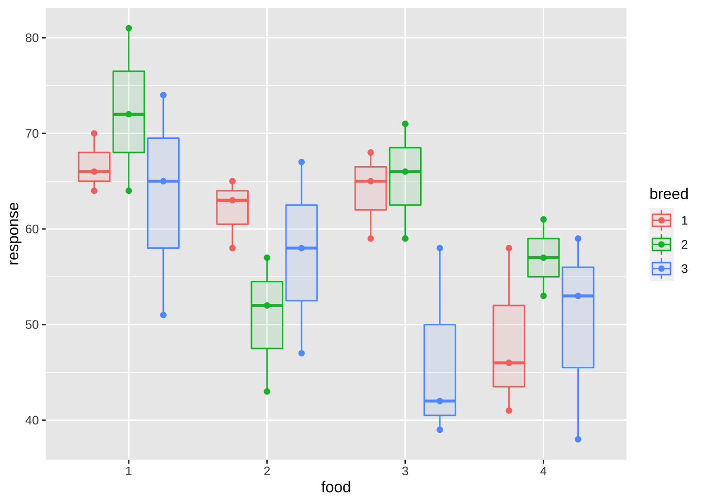
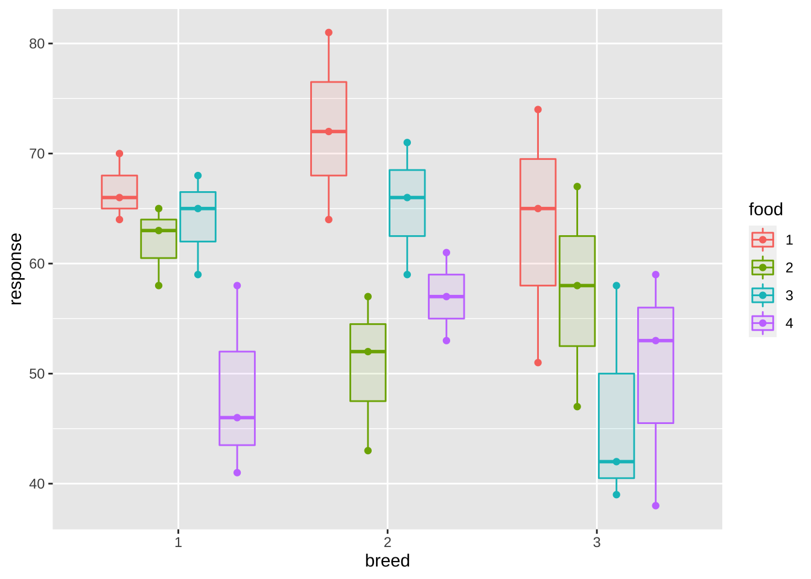
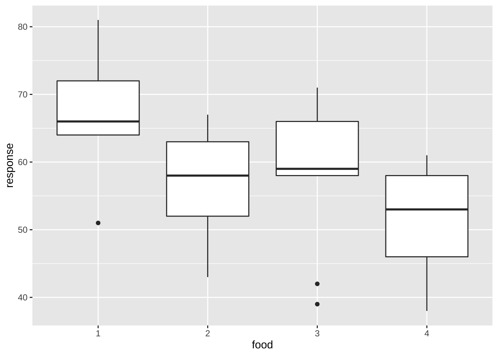
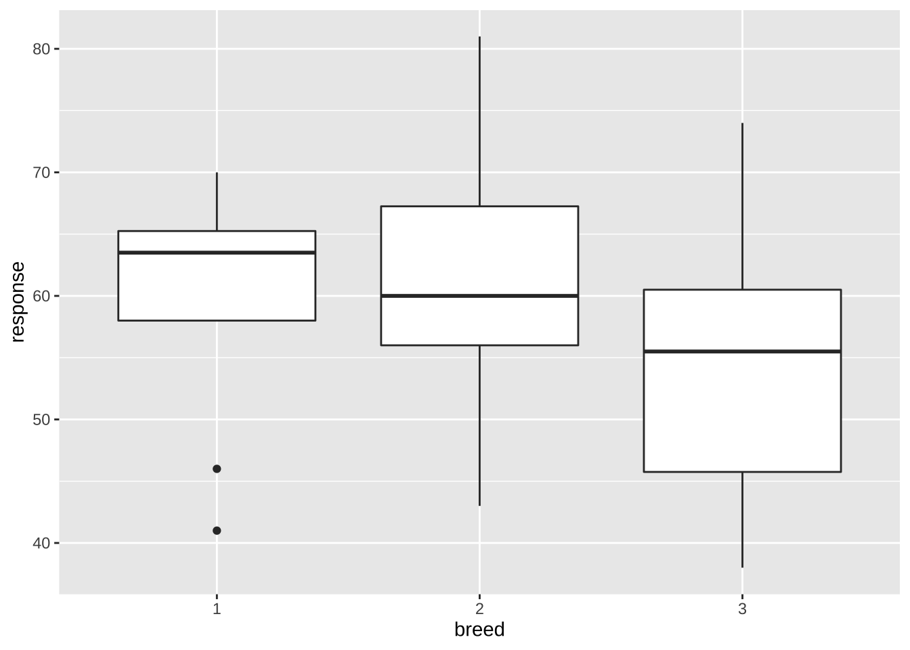
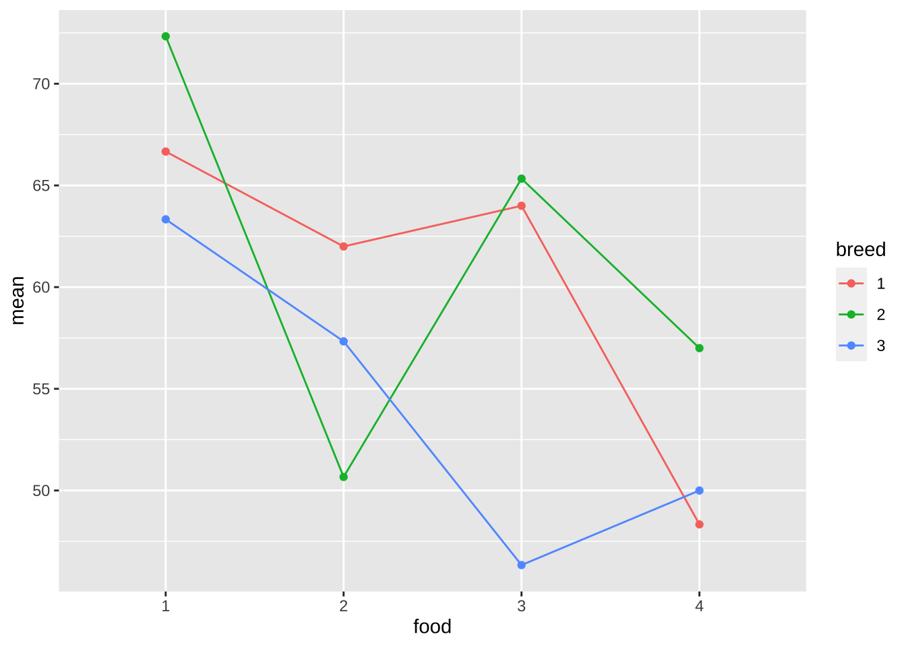
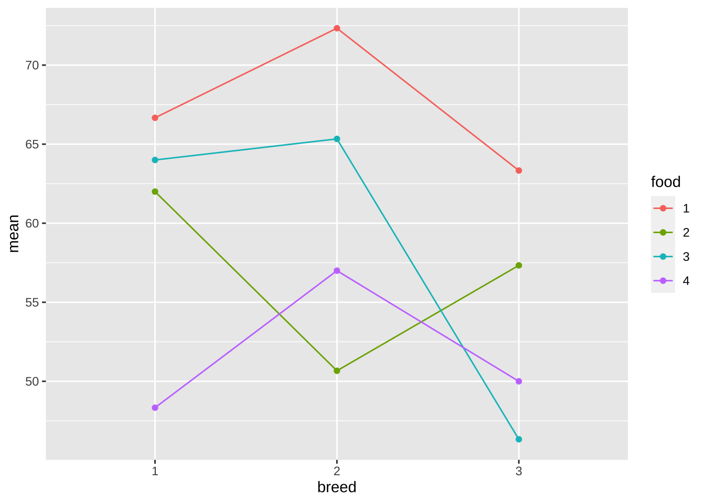

제 2 장 예제 4.1
예제 4.1 은 교과서 89 페이지에 나온 분석 예제이다. 4종류의 사료(A)와 3종류의 돼지품종(B)이 체중 증가에 미치는 영향을 조사한 실험이다. 각 처리 조합마다 3회 반복실험하여 총 36개의 관측값을 얻었다.
2.1 자료 읽기
다음과 같은 순서로 자료를 가진 데이터프레임 df2을 만들어 보자.
response<- c(64, 66, 70, 72, 81, 64,
74, 51, 65, 65, 63, 58,
57, 43, 52, 47, 58, 67,
59, 68, 65, 66, 71, 59,
58, 39, 42, 58, 41, 46,
57, 61, 53, 53, 59, 38)
response## [1] 64 66 70 72 81 64 74 51 65 65 63 58 57 43 52 47 58 67 59 68 65 66 71 59 58
## [26] 39 42 58 41 46 57 61 53 53 59 38food<- factor(rep(c(1:4), each=9))
breed<- factor(rep(c(1:3), each=3))
food## [1] 1 1 1 1 1 1 1 1 1 2 2 2 2 2 2 2 2 2 3 3 3 3 3 3 3 3 3 4 4 4 4 4 4 4 4 4
## Levels: 1 2 3 4breed## [1] 1 1 1 2 2 2 3 3 3
## Levels: 1 2 3df2<- data.frame(food, breed, response)
head(df2)## food breed response
## 1 1 1 64
## 2 1 1 66
## 3 1 1 70
## 4 1 2 72
## 5 1 2 81
## 6 1 2 642.2 자료의 시각화와 기초 통계량
이제 처리별로 효과를 시각적으로 비교하기 위하여 자료들에 대한 산점도와 상자그림을 그려보자
df2 %>%
ggplot() +
aes(x = food , y = response, fill=breed, color=breed, group = interaction(food, breed)) +
geom_boxplot(alpha = 0.1, width = 0.75) +
geom_beeswarm(dodge.width = 0.75)
df2 %>%
ggplot() +
aes(x = breed , y = response, fill=food, color=food, group = interaction(breed,food)) +
geom_boxplot(alpha = 0.1, width = 0.75) +
geom_beeswarm(dodge.width = 0.75)
위와 같이 두 요인의 조합으로 그림을 보는 것보다 각 요인별로 요약하여 보는 것도 유용하다.
df2 %>%
ggplot( aes(x = food , y = response) ) +
geom_boxplot()
df2 %>%
ggplot( aes(x = breed , y = response)) +
geom_boxplot()
다음으로 12개의 처리 조합에 대한 체중의 기초통계량(평균과 표준편차)을 구해보자.
df2s <- df2 %>% group_by(food, breed) %>% summarise(mean=mean(response), sd=sd(response))## `summarise()` has grouped output by 'food'. You can override using the `.groups` argument.df2s## # A tibble: 12 x 4
## # Groups: food [4]
## food breed mean sd
## <fct> <fct> <dbl> <dbl>
## 1 1 1 66.7 3.06
## 2 1 2 72.3 8.50
## 3 1 3 63.3 11.6
## 4 2 1 62 3.61
## 5 2 2 50.7 7.09
## 6 2 3 57.3 10.0
## 7 3 1 64 4.58
## 8 3 2 65.3 6.03
## 9 3 3 46.3 10.2
## 10 4 1 48.3 8.74
## 11 4 2 57 4
## 12 4 3 50 10.8이제 위에서 계산된 처리 그룹에 대한 평균으로 상호작용 그림을 그려보자. 아래 그림에서 사료의 종류에 따라서 체중의 변화를 본 그림이다. 사료 1번에서 체중이 가장 크게 나타났고 다른 사료에 대해서는 체중이 줄어드는데 품종에 따라서 그 크기가 서로 다르다.
df2s %>%
ggplot() +
aes(x = food , y = mean, color =breed) +
geom_line(aes(group = breed)) +
geom_point()
아래 그림은 아래 그림에서 품종의 종류에 따라서 체중의 변화를 본 그림이다.
df2s %>%
ggplot() +
aes(x = breed , y = mean, color =food) +
geom_line(aes(group = food)) +
geom_point()
사료와 품종간에 상호 작용이 그림으로 나타나고 있지만 뚜렸하지 않고 해석하기도 힘들다.
2.3 분산분석표와 가설검정
이제 이원배치법에서의 가설검정을 수행하기 위하여 분산분석 표를 구해보자.
df2aov <- aov(response ~ food*breed, data=df2)
summary(df2aov)## Df Sum Sq Mean Sq F value Pr(>F)
## food 3 1156.6 385.5 6.163 0.00294 **
## breed 2 349.4 174.7 2.793 0.08121 .
## food:breed 6 771.3 128.5 2.055 0.09712 .
## Residuals 24 1501.3 62.6
## ---
## Signif. codes: 0 '***' 0.001 '**' 0.01 '*' 0.05 '.' 0.1 ' ' 1상호작용에 대한 가설 검정 \[ H_0: (\alpha \beta)_{11} = (\alpha \beta)_{12} =\cdots = (\alpha \beta)_{6} =0 \quad \text{ vs.} \quad H_1: \text{ not } H_0 \]
분산분석표에서 상호작용에 대한 가설 검정을 위한 F-통계량은 \(2.055\)이고 p-값은 0.097으로 유의수준 0.05보다 크므로 귀무가설 \(H_0\)를 기각할 수 있다. 따라서 사료와 품종 간의 상호작용은 유의하지 않다. 하지만 p-값이 0.1 미만이므로 품종에 따라서 사료가 주는 효과가 약간은 다를 가능성이 존재한다.
주효과에 대한 가설 검정
주효과에 대한 검정에서 품종에 대한 검정은 p-값이 \(0.081\)로서 유의수준 5%에서 귀무가설을 기각할 수 없으므로 돼지품종에 따라서는 유의한 차이가 없다. 다만 유의수준 1%에서는 유의하므로 약간의 차이는 있다고 말할 수 있다.
사료에 대한 검정은 p-값이 \(0.003\)로서 유의수준 5%에서 귀무가설을 기각할 수 있어서 사료에 따라서는 유의한 차이가 있다.
2.4 분산분석 후의 추정
2.4.1 모평균에 대한 추론
이원배치에서 유의한 상호작용이 있는 경우 처리수준 \(A_iB_j\)에 대한 모평균 \(\mu_{ij}\) 에 대한 추정량은 처리수준 \(A_iB_j\)에서의 관측값들의 평균 \(\bar {x}_{ij.}\) 이며 오차항의 분산 \(\sigma^2_E\)는 분산분석표에서 \(MS_E\)로 추정할 수 있다.
\[ \hat \sigma^2_E = MS_E = \frac{SS_E}{ab(r-1)} =\frac{18231}{27} = 675 \]
위의 결과를 이용하면 처리수준 \(A_iB_j\)에 대한 모평균 \(\mu_{ij}\)에 대한 \(100(1-\alpha)\)% 신뢰구간은 다음과 같이 주어진다.
\[ \bar x_{ij.} \pm t(1-\alpha/2, ab[r-1]) \sqrt{ \frac{MS_E}{r}} \]
예를 들어 사료가 1 이고(\(i=1\)) 품종이 1인 경우(\(j=1\)) 체중의 평균 \(\mu_{11}\) 에 대한 95% 신뢰 구간을 구해보자. 일단 위의 기초 통계량에서 \(\bar x_{11.}=66.7\) 이고 분산분석표에서 \(MS_E =62.6\), \(r=3\) 그리고 t-분포의 백분위수 \(t(0.975, 24)\) 은 다음과 같이 주어진다.
qt(0.975, 24)## [1] 2.063899따라서 \(\mu_{11}\) 에 대한 95% 신뢰 구간은 다음과 같다.
\[\begin{equation} \bar x_{11.} \pm t(1-\alpha/2, 24) \sqrt{ \frac{MS_E}{r}} = 66.7 \pm (2.06)\sqrt{\frac{62.6}{3}} = (57, 76) \tag{2.1} \end{equation}\]
패키지 emmeans에 있는 함수 emmeans()를 다음과 같이 사용하면 각 처리에 대한 평균의 95% 신뢰구간을 쉽게 구할 수 있다.
emmeans(df2aov, "food", "breed")## breed = 1:
## food emmean SE df lower.CL upper.CL
## 1 66.7 4.57 24 57.2 76.1
## 2 62.0 4.57 24 52.6 71.4
## 3 64.0 4.57 24 54.6 73.4
## 4 48.3 4.57 24 38.9 57.8
##
## breed = 2:
## food emmean SE df lower.CL upper.CL
## 1 72.3 4.57 24 62.9 81.8
## 2 50.7 4.57 24 41.2 60.1
## 3 65.3 4.57 24 55.9 74.8
## 4 57.0 4.57 24 47.6 66.4
##
## breed = 3:
## food emmean SE df lower.CL upper.CL
## 1 63.3 4.57 24 53.9 72.8
## 2 57.3 4.57 24 47.9 66.8
## 3 46.3 4.57 24 36.9 55.8
## 4 50.0 4.57 24 40.6 59.4
##
## Confidence level used: 0.952.5 반복이 있는 이원배치에서 상호작용이 없는 경우의 추론
교과서에서 상호작용의 유의성에 따라서 모형을 축소하는 기준을 다음과 같이 제시하고 있다.
상호작용에 대한 p-값이 0.25보다 큰 경우 상호작용이 존재하지 않는다고 판단하고 오차항에 풀링힌다. 상호작용을 오차항에 풀링한다는 것은 다음과 같은 모형을 사용한다는 의미이다.
\[\begin{equation} x_{ijk} = \mu + \alpha_i + \beta_j + e_{ijk} \tag{2.2} \end{equation}\]
만약 예제 4.1에 대한 반복이 있는 자료에서 위와 같이 오차항을 풀링한 모형을 적합해 보면 아래와 같은 분산분석표를 얻는다.
df2aov2 <- aov(response ~ food + breed, data=df2)
summary(df2aov2)## Df Sum Sq Mean Sq F value Pr(>F)
## food 3 1156.6 385.5 5.089 0.00575 **
## breed 2 349.4 174.7 2.306 0.11705
## Residuals 30 2272.6 75.8
## ---
## Signif. codes: 0 '***' 0.001 '**' 0.01 '*' 0.05 '.' 0.1 ' ' 1만약 반복이 있는 이원배치 모형에서 상호작용 \(A \times B\)가 존재하지 않고 주효과만 유의한 경우, 즉 모형 (2.2)을 가정한 경우 모평균 \(\mu_{ij}\)에 대한 모수는 다음과 같다.
\[ \mu_{ij} = \mu + \alpha_i + \beta_j \]
이러한 경우 모평균 \(\mu_{ij}\)에 대한 최소제곱 추정량(least square estimator)은 표본 평균 \(\bar x_{ij.}\)이 아니라 다음과 같은 추정량이 주어진다.
\[\begin{align*} \hat \mu_{ij} & = \hat \mu + \hat \alpha_i + \hat \beta_j \\ & = (\bar{\bar x}) + (\bar x_{i..}-\bar{\bar x}) + (\bar x_{.j.}-\bar{\bar x}) \\ & = \bar x_{i..} + \bar x_{.j.} - \bar{\bar x} \end{align*}\]
위에서 주어진 \(\hat \mu_{ij}\) 는 모평균 \(\mu_{ij}\)의 불편 추정량이며 상호작용 \(A \times B\) 이 없는 모형 (2.2) 에서 표본 평균 \(\bar x_{ij.}\) 보다 분산이 작은 추정량이다. 즉,
\[ Var \left (\hat \mu_{ij} \right ) = \frac{\sigma_E^2}{n_e} \le \frac{\sigma_E^2}{r} = Var (\bar x_{ij.} ) \]
위의 식에서 유효 반복수 \(n_e\) 는 다음과 같이 정의된다.
\[ \frac{1}{n_e} = \frac{1}{br} + \frac{1}{ar} - \frac{1}{abr}, \quad n_e=\frac{abr}{a+b-1} \]
따라서 이 경우 모평균 \(\mu_{ij}\)에 대한 \(100(1-\alpha)\)% 신뢰구간은 다음과 같은 주어진다.
\[ \hat \mu_{ij} \pm t(1-\alpha/2, ab[r-1]) \sqrt{ \frac{MS_E}{n_e}} \]
주의할 범은 위의 신뢰구간에서 \(MS_E\)는 상호작용이 없는 모형 (2.2) 으로 유도된 분산분석표에 나타난 \(MS_E\) 이다.
참고로 예제 4.1 경우 \(a=4\), \(b=3\), \(r=3\)이므로 다음과 같이 주어진다.
\[ n_e = \frac{abr}{a+b-1} = \frac{(4)(3)(3)}{4+3-1} = 6 \]
상호작용 \(A \times B\) 이 없는 모형 (2.2) 에서 적용한 분산분석 결과df2aov2 에 대하여 함수 emmeans()를 다음과 같이 사용하면 모형 (2.2) 에서 각 처리에 대한 평균 \(\mu_{ij}\)에 대한 최소제곱 추정량 \(\hat \mu_{ij}=\bar x_{i..} + \bar x_{.j.} - \bar{\bar x}\) 과 95% 신뢰구간을 다음과 같이 구할 수 있다.
emmeans(df2aov2, "food", "breed")## breed = 1:
## food emmean SE df lower.CL upper.CL
## 1 69.1 3.55 30 61.8 76.3
## 2 58.3 3.55 30 51.0 65.6
## 3 60.2 3.55 30 52.9 67.5
## 4 53.4 3.55 30 46.2 60.7
##
## breed = 2:
## food emmean SE df lower.CL upper.CL
## 1 70.2 3.55 30 62.9 77.4
## 2 59.4 3.55 30 52.1 66.6
## 3 61.3 3.55 30 54.0 68.5
## 4 54.5 3.55 30 47.2 61.8
##
## breed = 3:
## food emmean SE df lower.CL upper.CL
## 1 63.1 3.55 30 55.8 70.3
## 2 52.3 3.55 30 45.0 59.6
## 3 54.2 3.55 30 46.9 61.5
## 4 47.4 3.55 30 40.2 54.7
##
## Confidence level used: 0.95위에서 나타난 emmean 은 \(\mu_{ij}\)에 대한 최소제곱 추정량 \(\bar x_{i..} + \bar x_{.j.} - \bar{\bar x}\) 으로서 아래 주어진 표본평균 \(\bar x_{ij.}\) 과 다른 값으로 나타남을 알 수 있다.
df2s## # A tibble: 12 x 4
## # Groups: food [4]
## food breed mean sd
## <fct> <fct> <dbl> <dbl>
## 1 1 1 66.7 3.06
## 2 1 2 72.3 8.50
## 3 1 3 63.3 11.6
## 4 2 1 62 3.61
## 5 2 2 50.7 7.09
## 6 2 3 57.3 10.0
## 7 3 1 64 4.58
## 8 3 2 65.3 6.03
## 9 3 3 46.3 10.2
## 10 4 1 48.3 8.74
## 11 4 2 57 4
## 12 4 3 50 10.8예를 들어 상호작용 \(A \times B\) 이 없는 모형 (2.2) 에서 \(\mu_{11}\) 에 대한 95% 신뢰 구간은 다음과 같다.
\[\begin{align*} \hat \mu_{11} \pm t(1-\alpha/2, 30) \sqrt{ \frac{MS_E}{n_e}} & = 69.1 \pm (2.04)\sqrt{\frac{ 75.8}{6}} \\ & = 69.1 \pm (2.04)(3.55) \\ & = (61.8, 76.3) \end{align*}\]
위의 신뢰구간 \((61.8, 76.3)\)은 상호 작용이 포함된 모형에서 유도힌 신뢰구간 (2.1)에서 구한 \((57, 76)\)과 다르다.